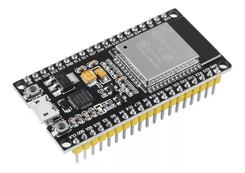
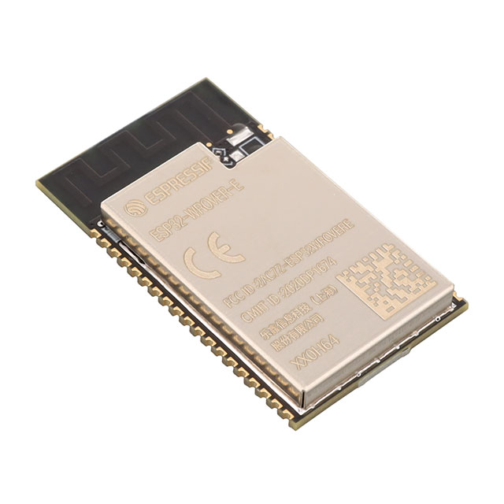
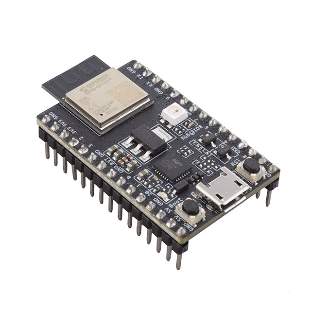
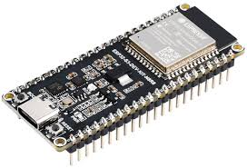

El ESP32 es un microcontrolador con tecnología Wi-Fi y Bluetooth integrados en un chip. Es de bajo costo y bajo consumo de energía. Fue creado por Espressif Systems.
| Modelo | Uso común | Imagen |
|---|---|---|
| ESP32-WROOM-32 | IoT, automatización del hogar, proyectos de sensores inalámbricos |  |
| ESP32-WROVER | Aplicaciones que requieren más memoria, como reconocimiento de voz e imágenes |  |
| ESP32-C3 | IoT seguro, dispositivos portátiles, sensores de bajo consumo |  |
| ESP32-S3 | Procesamiento de imágenes, IA, USB nativo, proyectos avanzados |  |